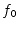
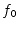
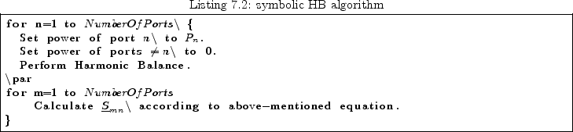

Using harmonic balance techniques, it is also possible to perform
an S-parameter simulation in the large-signal regime. This is called
LSSP (large-signal s-parameter). Figure 7.2 shows the
principle. The port  excites the circuit with the simulation
frequency ; meanwhile the power of all other ports is set to
zero. Having voltage and current of the fundamental frequency
at the ports, the S-parameters can be calculated:
excites the circuit with the simulation
frequency ; meanwhile the power of all other ports is set to
zero. Having voltage and current of the fundamental frequency
at the ports, the S-parameters can be calculated:
An algorithm in symbolic language should describe the whole LSSP:
